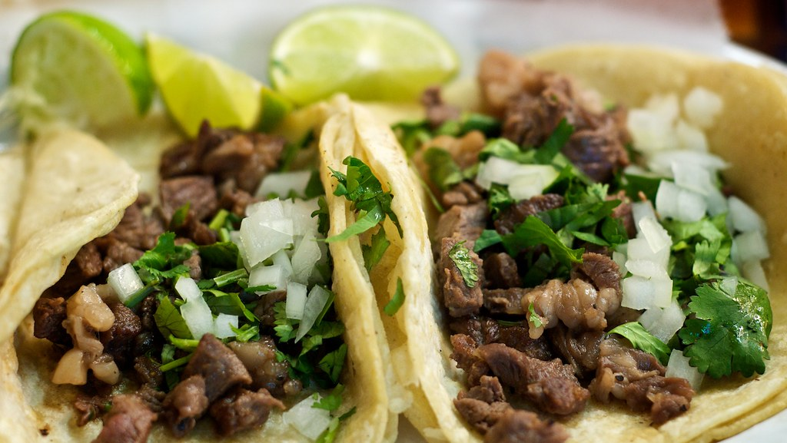

Home
Carne Asada Tacos

These carne asada tacos feature juicy, citrus-marinated steak grilled to perfection and tucked into warm corn tortillas with fresh onion, cilantro, and a squeeze of lime. They're packed with bold, authentic flavor and are perfect for weeknight dinners, cookouts, or Taco Tuesday.
Ingredients:
- 2 lb flank steak or skirt steak
- 1/4 cup orange juice
- 2 tbsp lime juice
- 2 tbsp soy sauce
- 2 tbsp olive oil
- 4 cloves garlic, minced
- 1 tsp ground cumin
- 1 tsp chili powder
- 1 tsp smoked paprika
- 1/2 tsp black pepper
- 1 tsp salt
- 2 tbsp chopped fresh cilantro
- 12 small corn tortillas
- 1 small white onion, diced
- 1/2 cup chopped fresh cilantro
- Lime wedges
Steps:
- Marinate the steak. In a bowl or resealable bag, combine the orange juice, lime juice, soy sauce, olive oil, garlic, cumin, chili powder, smoked paprika, pepper, salt, and cilantro. Add the steak and coat it well. Refridgerate for at least 1 hour, or up to 8 for more flavor.
- Cook the steak. Remove the steak from the refridgerator about 20 mintues before cooking. Heat a skillet over high heat. Cook for about 3-5 minutes per side.
- Rest and slice. Let the steak rest for 5-10 minutes. Slice it thinly against the grain, then chop into bite-sized pieces.
- Warm the tortillas. Heat the tortillas in a dry skillet for about 30 seconds per side, or warm them directly over a gas flame for a light char. Keep them wrapped in a clean kitchen towel until ready to serve.
- Assemble the tacos. For each taco, add steak, onion, cilantro, and a squeeze of fresh lime to each tortilla. Enjoy!